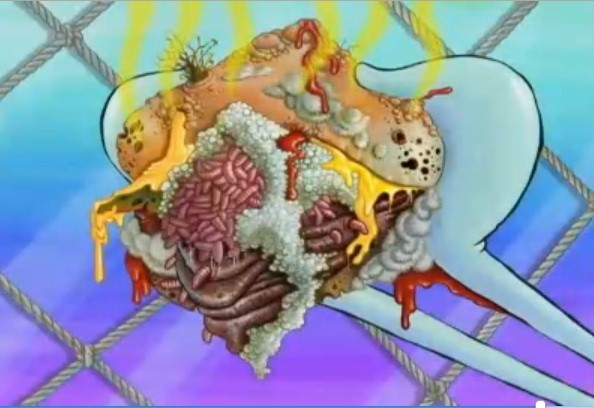

게살버거 레시피

재료 : 참깨빵, 게살패티 1개, 소고기 패티 1개, 치즈1개, 양파 적당히, 피클 5개, 할라피뇨 5개, 토마토 1개, 로메인 3장
드레싱 : 타르타르소스, 올리브유 1큰술, 레몬즙 2큰술, 데리소스, 케첩
- 노래를 틀어서 스폰지밥을 준비시킨다
- 버터를 바른 철판 위에 참깨빵과 게살패티, 소고기 패티를 굽는다
- 로메인과 토마토, 양파를 씻고 물기를 제거한 후 준비한다.
- 토마토는 7mm로 썰고, 썰은 양파, 치즈, 피클, 할라피뇨를 준비한다
- 노릇한 참깨빵 위에 드레싱 소스를 바른 후 소고기패티, 치즈, 게살패티를 올린다
- 피클, 할라피뇨를 올려주고, 케첩으로 웃는 얼굴을 그려준다~
- 로메인 상추로 피클과 할라피뇨를 덮고, 토마토를 올린다
- 레몬즙이 가미된 소스로 마무리
- 참깨빵을 덮은 뒤 뽀뽀쪽~